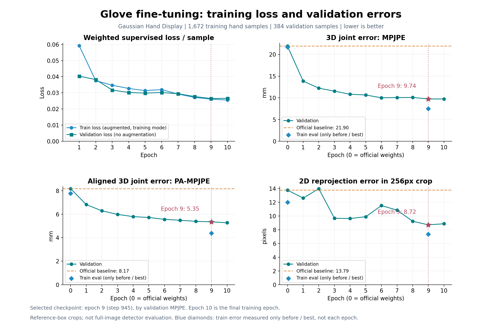

正式微调10轮；此前小样本试训单独运行，正式阶段从官方权重重新开始，因此不拼接两段曲线。

左上：训练与验证loss。右上：MPJPE，仅对齐手腕平移。左下：PA-MPJPE，额外对齐旋转和尺度。右下：256像素裁剪图中的二维投影误差。均越低越好；不是分类准确率。
第0轮为官方基线；按验证MPJPE选第9轮。训练loss带增强、训练模式；验证loss无增强、评估模式，不能只根据两条曲线高低判断过拟合。二维误差使用训练时的标注框裁剪协议，不能与PPT中的原图检测框误差直接混用。
目前训练与验证总体同步改善；末两轮接近平台，尚未看到持续的验证退化，不能据此认定明显过拟合，也不能保证对新手套场景泛化。
PDF · 逐轮数据